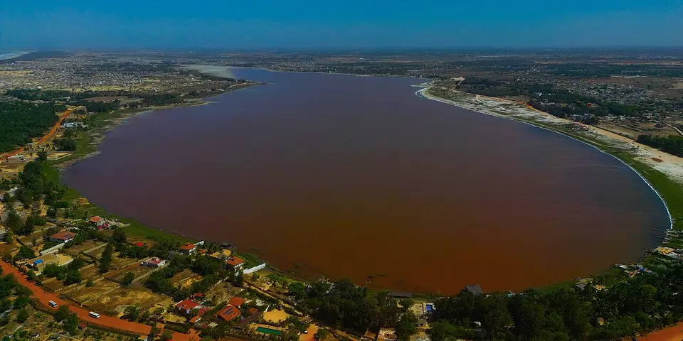

Sub-Saharan Africa
Senegal on a budget
Senegal blends mbalax music, Atlantic surf, the island of Gorée and the colonial charm of Saint-Louis, with mangrove channels in the Sine-Saloum Delta to slow things down.
Photo: Issiaga0, CC BY-SA 4.0, via Wikimedia Commons

Classic route
Dakar and Gorée, Saint-Louis, then the Sine-Saloum delta. 2 weeks.
Before you go
Flights to Dakar: Skyscanner · Kiwi.com · Google Flights
Hostels and guesthouses in Dakar · Saint-Louis · Sine-Saloum Delta · Gorée Island
Tours and tickets: Dakar · Saint-Louis
Mobile data: Senegal eSIM
Travel insurance: SafetyWing
How much 15 places in Senegal cost
Daily budgets per person in US dollars: a hostel dorm or simple guesthouse, local food, local transport and the usual entry fees.
-
Dakar
Live mbalax music, surf breaks at Ngor and Ouakam, the Village des Arts studios and grilled fish by the ocean.
Bed $20 · Food $8 · Getting around $3 · Extras $4
Budget tip: Agree taxi fares before you get in. Thieboudienne, the fish and rice dish, is the cheap national lunch at local cafés.
$35per day -
Saint-Louis
A faded colonial island town of balconied houses, plus pelicans and flamingos by the thousand at the Djoudj bird reserve.
Bed $18 · Food $8 · Getting around $4 · Extras $4
Budget tip: Visit during the jazz festival in May, but book early. Horse-drawn carriage tours of the island are cheap if you bargain.
$34per day -
Sine-Saloum Delta
Paddle by pirogue through mangrove channels to shell islands, baobab-dotted villages and fishing communities where life moves with the tides.
Bed $18 · Food $8 · Getting around $5 · Extras $6
Budget tip: Arrange pirogue trips from Toubacouta or Palmarin. Simple campements with half board are the best-value places to stay.
$37per day -
Gorée Island
A car-free island of pastel colonial houses and bougainvillea, home to the sobering House of Slaves museum.
Bed $20 · Food $8 · Getting around $3 · Extras $5
Budget tip: Ferries from Dakar run often and cost a few dollars. Stay overnight to see the island after the day visitors leave.
$36per day -
Touba
Holy city of the Mouride brotherhood centred on its huge Great Mosque, quiet most of the year and overflowing during the Grand Magal pilgrimage.
Bed $15 · Food $6 · Getting around $4 · Extras $2
Budget tip: Dress conservatively and expect no smoking or alcohol in the city. Volunteer guides at the mosque work for a tip; avoid Magal week unless attending.
$27per day -
Ziguinchor
The riverside capital of green Casamance, with pirogue trips through mangroves and bird-filled creeks.
Bed $15 · Food $7 · Getting around $4 · Extras $3
Budget tip: Take the overnight ferry from Dakar instead of the long road through the Gambia. It saves a night's accommodation too.
$29per day -
Joal-Fadiouth
Island village built on piled seashells, linked by a wooden bridge, with a shell cemetery shared by Muslims and Christians and granaries on stilts.
Bed $15 · Food $7 · Getting around $4 · Extras $4
Budget tip: Hire a local guide from the bridge for a fair price, and stay in Joal for cheaper rooms. Grilled fish is excellent here.
$30per day -
Carabane Island
Island in the Casamance River mouth with old French colonial ruins, a Breton church, mangrove channels and quiet palm-shaded beaches.
Bed $15 · Food $7 · Getting around $6 · Extras $3
Budget tip: Pirogues from Elinkine are the cheapest way across. Bring cash, as there are no ATMs, and stay in a simple campement with meals included.
$31per day -
Cap Skirring
Wide palm-backed beaches and quiet fishing villages in southern Casamance, with fresh oysters and grilled fish.
Bed $18 · Food $8 · Getting around $4 · Extras $3
Budget tip: Stay in village campements rather than hotels for a fraction of the cost. Shared taxis run from Ziguinchor.
$33per day -
Kédougou
The hilly Bassari country, with hikes to the Dindéfelo waterfall and traditional hilltop villages.
Bed $15 · Food $7 · Getting around $6 · Extras $5
Budget tip: Hire a local guide for village hikes. Campements in Dindéfelo cost a few dollars.
$33per day -
Toubab Dialaw
Fishing village south of Dakar with cliffside guesthouses, artists' studios, drumming workshops and colourful pirogues pulled up on the beach.
Bed $18 · Food $8 · Getting around $4 · Extras $3
Budget tip: Escape Dakar's prices here; take a bus to Rufisque and a sept-place onward. Ask your guesthouse about djembe lessons at local rates.
$33per day -
Lac Rose
A pink salt lake behind the dunes, where workers scoop salt from the water by hand and pile it in white mounds.
Bed $18 · Food $8 · Getting around $4 · Extras $5
Budget tip: Go in the dry season around midday, when the pink is strongest. Shared taxis from Dakar are cheap.
$35per day -
Djoudj Bird Sanctuary
Wetland on the Senegal River delta hosting pelicans, flamingos and millions of migrating birds, explored by pirogue between November and April.
Bed $18 · Food $8 · Getting around $10 · Extras $8
Budget tip: Share a car from Saint-Louis with other travellers to split the cost. Bring binoculars and arrive early in the morning for the best birding.
$44per day -
Lompoul Desert
Small patch of rolling orange dunes between Dakar and Saint-Louis, with Mauritanian-style tents, camel rides and starry nights near the Atlantic.
Bed $25 · Food $8 · Getting around $8 · Extras $10
Budget tip: Book a tent camp with dinner included, and ask about 4x4 transfers from Lompoul village. Visit on weekdays, when Dakar groups are fewer.
$51per day -
Niokolo-Koba National Park
Vast savanna and gallery forest park on the Gambia River, home to hippos, antelope, primates and rare sightings of chimpanzees and lions.
Bed $20 · Food $8 · Getting around $20 · Extras $20
Budget tip: Visit in the dry season from December to May, when tracks are passable. Arrange a vehicle and guide from Tambacounda or Kédougou to save on fees.
$68per day
Know before you go
Senegal on a budget: the basics
Currency
$1 = 583 XOF
West African CFA franc
| Dollars to XOF | XOF to dollars | ||
|---|---|---|---|
| $1 | 583 XOF | 100 XOF | $0.172 |
| $5 | 2,915 XOF | 500 XOF | $0.858 |
| $10 | 5,830 XOF | 1,000 XOF | $1.72 |
| $20 | 11,661 XOF | 5,000 XOF | $8.58 |
| $50 | 29,152 XOF | 10,000 XOF | $17.15 |
| $100 | 58,303 XOF | 50,000 XOF | $85.76 |
A typical day here (about $36) is roughly 21,000 XOF.
Mid-market rate on 2026-10-05. Cash machines and exchange desks pay a little less.
Getting around
Shared sept-place taxis (old seven-seat estate cars) and minibuses link Dakar with Saint-Louis and the Sine-Saloum, leaving from the big gare routière once full. In Dakar, ride-hailing apps such as Yango and Heetch work well, and the Gorée ferry runs often from the port. If heading to Casamance, the overnight Dakar to Ziguinchor ferry is worth booking a few days ahead.
Where to sleep
Expect small guesthouses, auberges and campements (simple lodges), with a handful of hostels in Dakar and Saint-Louis. Delta campements in the Sine-Saloum often include meals, which helps the budget.
What to eat
- Thieboudienne: fish, rice and vegetables cooked in tomato sauce
- Yassa poulet: chicken in a tangy onion and lemon sauce
- Mafé: meat in a rich peanut stew over rice
- Bissap: chilled sweet hibiscus juice sold everywhere
Money
Cash rules outside hotels, and ATMs in towns usually take Visa more reliably than Mastercard. Haggle at markets and agree taxi fares before you get in; small tips for good service are appreciated.
Phone data
Local SIMs from Orange, Free or Expresso are cheap and need a passport to register, and 4G coverage is good in towns and along main roads.
Heads up
Self-appointed guides on Gorée and around Dakar's markets can be pushy, so politely decline unless you have agreed a price.
Senegal travel: quick answers
How much does a day in Senegal cost on a budget?
About $36 a day for one person, from $27 in Touba to $68 in Niokolo-Koba National Park. That covers a hostel dorm or simple guesthouse, local food, local transport and the usual entry fees, so a week runs about $252 before flights.
When is the best time to visit Senegal?
November to May is the best time, with the most reliable weather for getting around.
What is the cheapest place to visit in Senegal?
Touba, at about $27 a day. Holy city of the Mouride brotherhood centred on its huge Great Mosque, quiet most of the year and overflowing during the Grand Magal pilgrimage.
How long do you need in Senegal?
Dakar and Gorée, Saint-Louis, then the Sine-Saloum delta. 2 weeks.
How much is $1 in Senegal?
One US dollar is about 583 West African CFA franc (XOF), going by the mid-market rate on 2026-10-05. So $20 is roughly 11,661 XOF, and a typical budget day of $36 comes to about 21,000 XOF.
How do you get around Senegal cheaply?
Shared sept-place taxis (old seven-seat estate cars) and minibuses link Dakar with Saint-Louis and the Sine-Saloum, leaving from the big gare routière once full. In Dakar, ride-hailing apps such as Yango and Heetch work well, and the Gorée ferry runs often from the port. If heading to Casamance, the overnight Dakar to Ziguinchor ferry is worth booking a few days ahead.
What food should you try in Senegal?
Thieboudienne, fish, rice and vegetables cooked in tomato sauce. Yassa poulet, chicken in a tangy onion and lemon sauce. Mafé, meat in a rich peanut stew over rice. Bissap, chilled sweet hibiscus juice sold everywhere.
Planning around the seasons? See where to go in November, or compare the cheapest countries nearby.
Similar budgets nearby
- Lesotho $36/day
- Madagascar $35/day
- Kenya $37/day
- Uganda $37/day